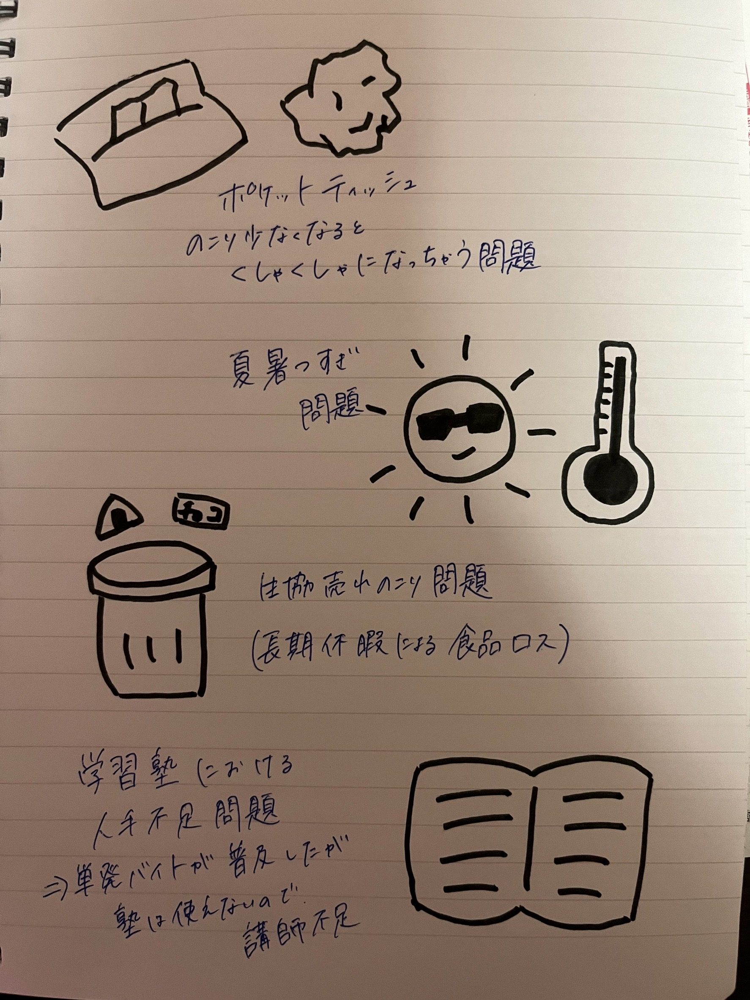

夏休み課題-世の中に存在する課題-
見つけた課題・問題

・ポケットティッシュ、残り少なくなるとくしゃくしゃになっちゃう問題
└ポケットティッシュや箱じゃないボックスティッシュは残り少なくなると、形を保てずくしゃくしゃになってしまい、最後まできれいに使えない、、、
・夏暑すぎ問題
└言わずもがな、今年の夏は暑すぎて秋がない。地球温暖化の影響もあると考えられる。命にかかわる問題なので、早急に解決するべき課題であるといえる
・生協売れ残り問題
└先日売れ残ったお菓子をもらった。長期休みに入るとどうしても売れず、かといって賞味期限も長期休みで切れてしまうため、深刻なフードロス問題であると考えられる
・学習塾における人手不足問題
└近年、人手不足解消として単発バイトの活用が増えているが、塾ではそれが使えない。学力を図る必要もあるし、信用問題もあるからだ。しかし、年々需要は高まっているため、課題といえる
・地方格差問題
└地方から都心に通うものとして、その格差を身をもって実感している。ここでは大きくひとまとめにしてしまっているが、細かな課題がたくさんあり、山積みになっていると考える
なぜこの課題を解決用と思ったか
日常で生活していて、自分が困ったり、問題だと感じたことは実は多くの人が同じように感じているのではないかと考えた。
特に、サークルで関わりの深い生協や自らのバイト先である塾に関することに関しては、より敏感になっていた。
また、長距離通学をしている身から、地方格差に関しては本当に実感している。これらの問題は一見大したことではなかったり、現状なんともなかったりしているので、何とかなるにはなるのだろうけど、解決すれば、確実にうれしい問題であると思うから。